시프트 레지스터
데이터와 valid를 같은 깊이로 이동시키고 iDelay-1 탭을 선택합니다.
동일한 지연 규약을 시프트 레지스터, 순환 큐, 메모리 기반 DUT로 전개했습니다. 설계 설명에 그치지 않고 Icarus Verilog 13.0으로 세 프로젝트를 실제 실행해 로그, VCD, 파형 PNG를 함께 공개합니다.
Project 1은 데이터/valid 정렬을, Project 2는 전체 stage 이동을 한 슬롯 갱신으로 바꾸는 확장성을, Project 3은 파일 기반 반복 검증과 결정적 오류 보고를 다룹니다.
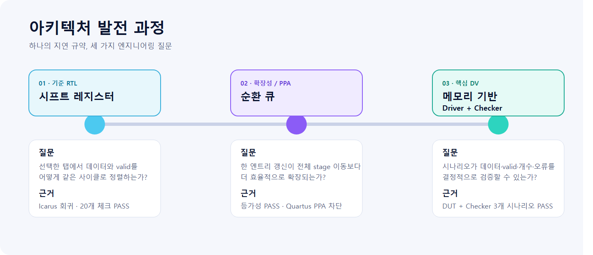
데이터와 valid를 같은 깊이로 이동시키고 iDelay-1 탭을 선택합니다.
(write_ptr-iDelay) mod DEPTH 주소와 한 슬롯 쓰기로 동일 동작을 구현합니다.
Input Driver, DUT, Output Checker를 분리하고 데이터·valid·출력 개수를 비교합니다.
3 시나리오 PASS세 프로젝트의 강의 PDF 5페이지를 분석한 뒤, 원본 슬라이드 캡처 없이 저장소 RTL·테스트벤치와 대조해 8종 구조도를 새로 그렸습니다. 각 그림은 SVG 원본과 PNG fallback을 함께 제공합니다.
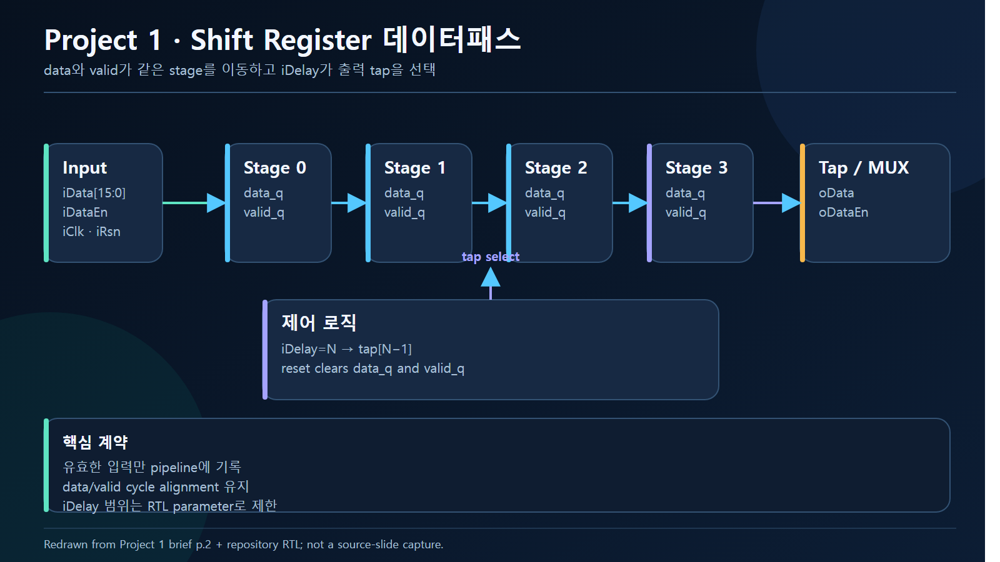
iDelay=N → tap[N-1]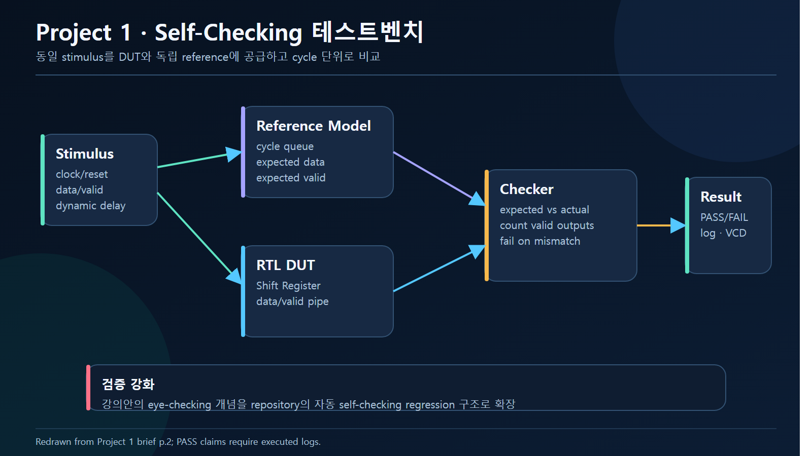
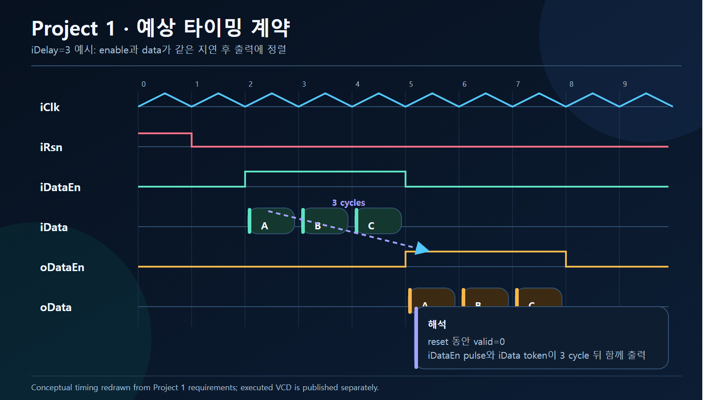
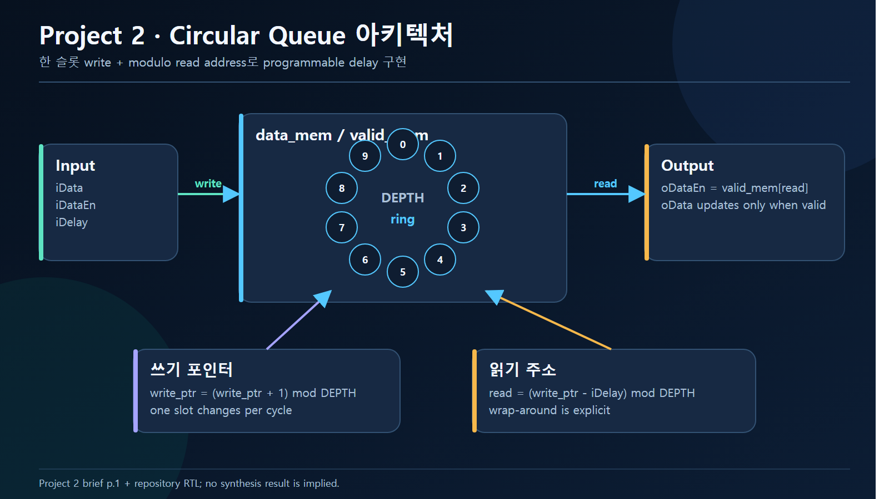
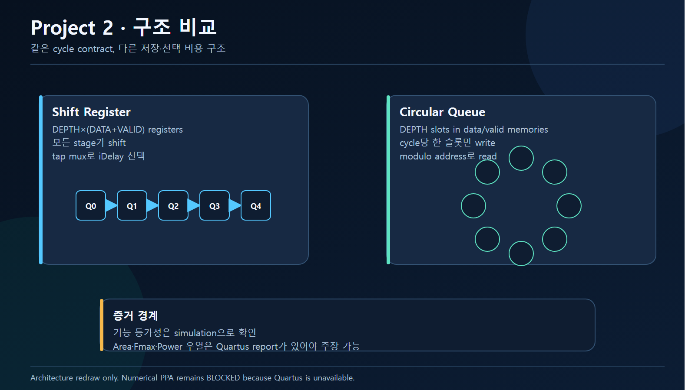
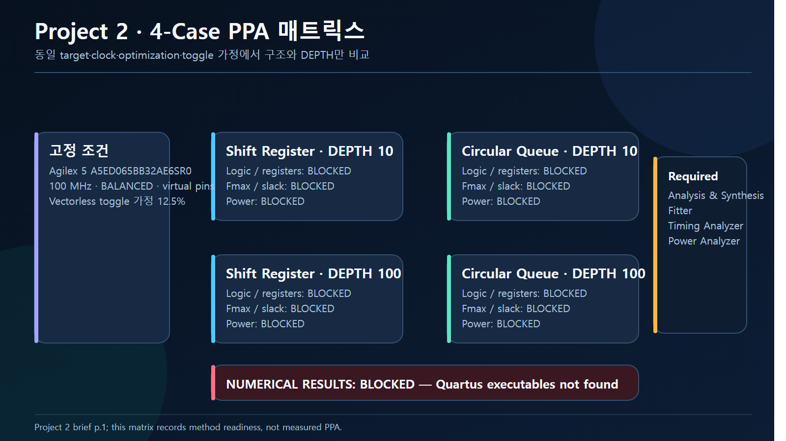
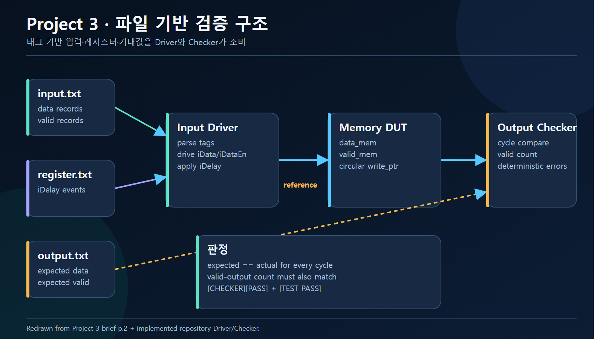
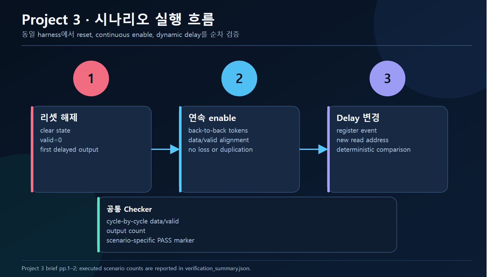
모든 저장 구조는 데이터와 valid를 하나의 transaction으로 취급합니다. 메모리형 구현은 data array를 리셋하지 않고 valid state로 stale data의 관측을 막습니다.
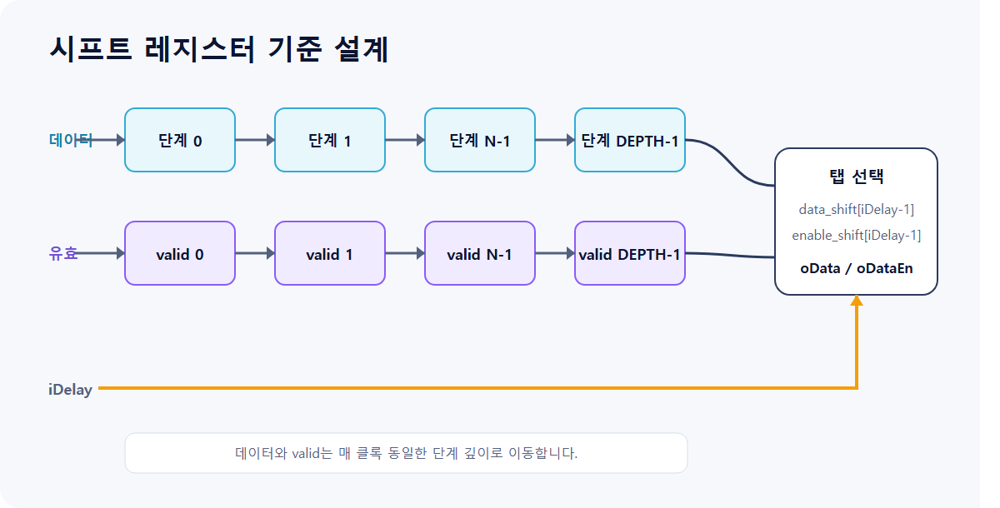
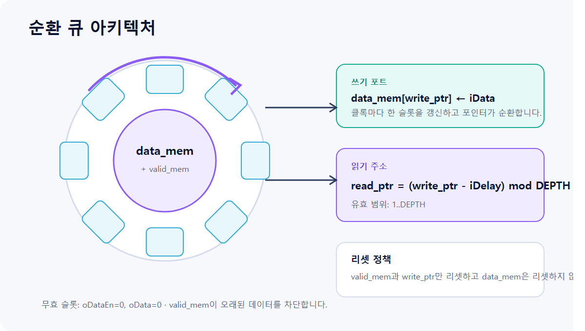
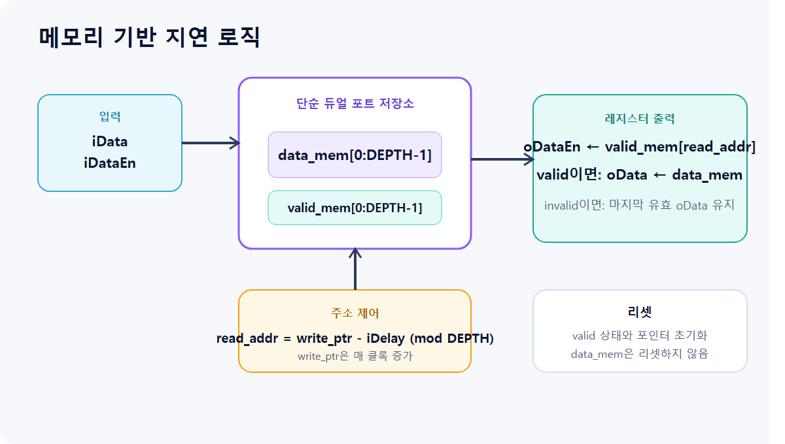
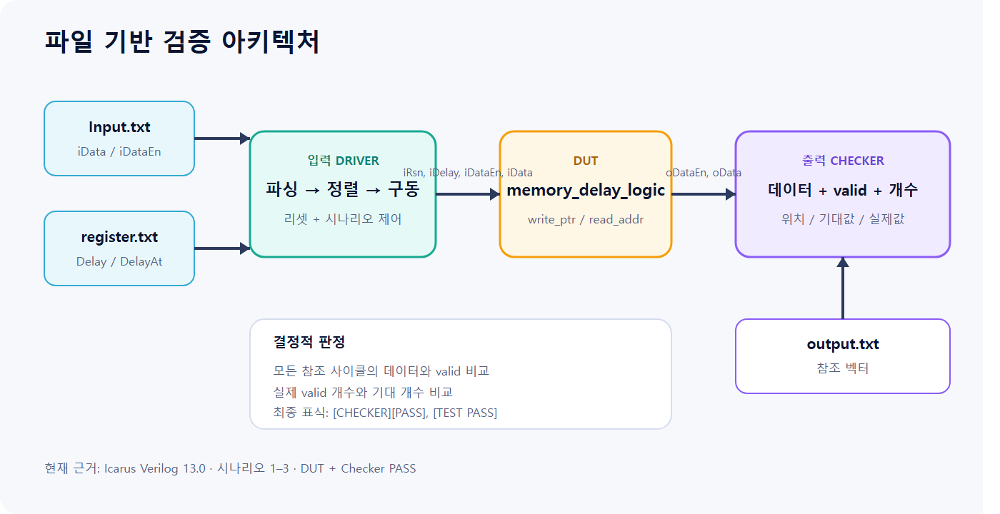
아래 그림은 예상 파형이 아닙니다. 커밋 c356ade의 RTL/TB를 Icarus Verilog 13.0으로 실행해 생성한 VCD에서 직접 렌더링했습니다.
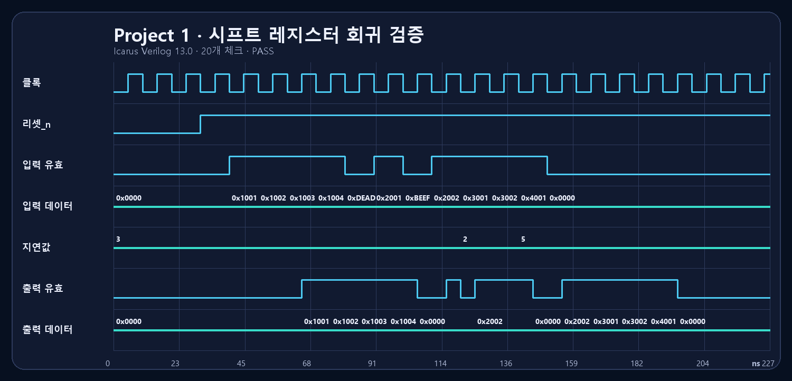
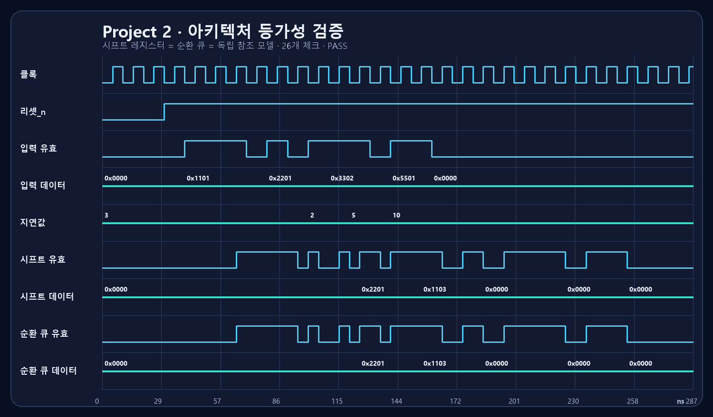
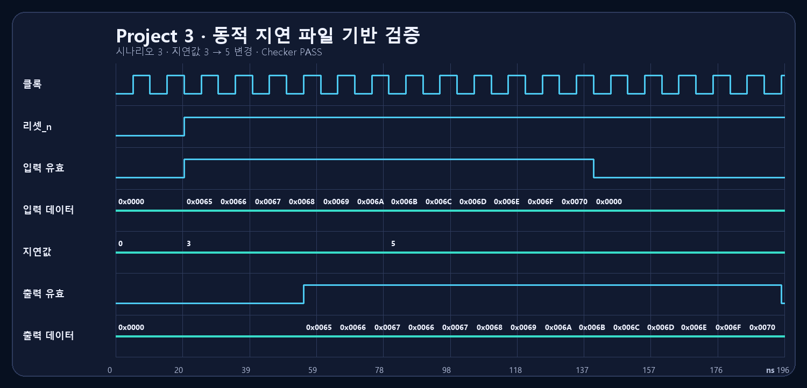
기능 시뮬레이션은 실제 실행 결과로 PASS를 표시합니다. Quartus가 없는 호스트에서 합성·수치 PPA를 실행한 것처럼 표시하지 않고 BLOCKED로 명시합니다.
| Project | RTL | Simulation | Synthesis | PPA |
|---|---|---|---|---|
| 1 · Shift Register | 검토 완료 | PASS Icarus 13.0 · 20 checks |
BLOCKED Quartus 미설치 |
N/A |
| 2 · Circular Queue | 검토 완료 | PASS 두 구현 + 참조 모델 · 26 checks |
BLOCKED Quartus 미설치 |
BLOCKED Fit/Timing/Power 보고서 없음 |
| 3 · Memory DV | 검토 완료 | PASS 시나리오 1–3 · Checker + Test PASS |
BLOCKED Quartus 미설치 |
N/A |
DEPTH 10/100, 동일 device·clock·optimization·virtual pin·toggle 가정으로 4개 프로젝트를 구성했습니다. 하지만 Quartus Fit/Timing/Power 보고서가 없으므로 면적·Fmax·전력 우위 수치는 공개하지 않습니다.
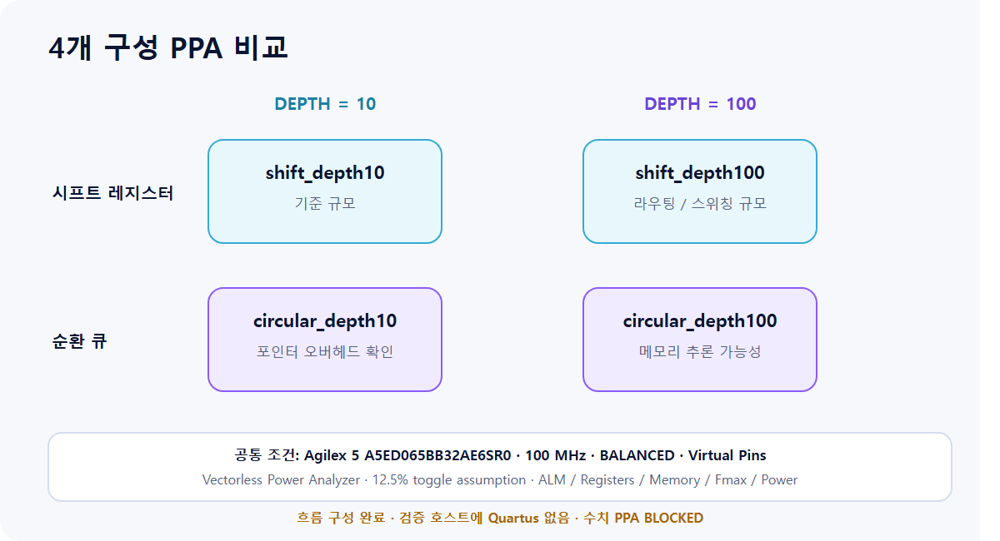
수치 PPA: BLOCKED. 대상 호스트에서 quartus_sh, quartus_fit, quartus_sta, quartus_pow를 찾지 못했습니다. 빈 CSV를 결과처럼 시각화하거나 추정치를 만들지 않았습니다.